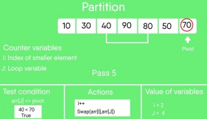

Like Merge Sort, QuickSort is a Divide and Conquer algorithm. It picks an element as pivot and partitions the given array around the picked pivot. There are many different versions of quickSort that pick pivot in different ways.
- Always pick first element as pivot.
- Always pick last element as pivot (implemented below)
- Pick a random element as pivot.
- Pick median as pivot.
The key process in quickSort is partition(). Target of partitions is, given an array and an element x of array as pivot, put x at its correct position in sorted array and put all smaller elements (smaller than x) before x, and put all greater elements (greater than x) after x. All this should be done in linear time.
Pseudo Code for recursive QuickSort function :
/* low --> Starting index, high --> Ending index */
quickSort(arr[], low, high)
{
if (low < high)
{
/* pi is partitioning index, arr[p] is now
at right place */
pi = partition(arr, low, high);
quickSort(arr, low, pi - 1); // Before pi
quickSort(arr, pi + 1, high); // After pi
}
}

Partition Algorithm
There can be many ways to do partition, following pseudo code adopts the method given in CLRS book. The logic is simple, we start from the leftmost element and keep track of index of smaller (or equal to) elements as i. While traversing, if we find a smaller element, we swap current element with arr[i]. Otherwise we ignore current element.
/* low --> Starting index, high --> Ending index */
quickSort(arr[], low, high)
{
if (low < high)
{
/* pi is partitioning index, arr[p] is now
at right place */
pi = partition(arr, low, high);
quickSort(arr, low, pi - 1); // Before pi
quickSort(arr, pi + 1, high); // After pi
}
}
Pseudo code for partition()
/* This function takes last element as pivot, places
the pivot element at its correct position in sorted
array, and places all smaller (smaller than pivot)
to left of pivot and all greater elements to right
of pivot */
partition (arr[], low, high)
{
// pivot (Element to be placed at right position)
pivot = arr[high];
i = (low - 1) // Index of smaller element
for (j = low; j <= high- 1; j++)
{
// If current element is smaller than or
// equal to pivot
if (arr[j] <= pivot)
{
i++; // increment index of smaller element
swap arr[i] and arr[j]
}
}
swap arr[i + 1] and arr[high])
return (i + 1)
}
Illustration of partition() :
arr[] = {10, 80, 30, 90, 40, 50, 70}
Indexes: 0 1 2 3 4 5 6
low = 0, high = 6, pivot = arr[h] = 70
Initialize index of smaller element, i = -1
Traverse elements from j = low to high-1
j = 0 : Since arr[j] <= pivot, do i++ and swap(arr[i], arr[j])
i = 0
arr[] = {10, 80, 30, 90, 40, 50, 70} // No change as i and j
// are same
j = 1 : Since arr[j] > pivot, do nothing
// No change in i and arr[]
j = 2 : Since arr[j] <= pivot, do i++ and swap(arr[i], arr[j])
i = 1
arr[] = {10, 30, 80, 90, 40, 50, 70} // We swap 80 and 30
j = 3 : Since arr[j] > pivot, do nothing
// No change in i and arr[]
j = 4 : Since arr[j] <= pivot, do i++ and swap(arr[i], arr[j])
i = 2
arr[] = {10, 30, 40, 90, 80, 50, 70} // 80 and 40 Swapped
j = 5 : Since arr[j] <= pivot, do i++ and swap arr[i] with arr[j]
i = 3
arr[] = {10, 30, 40, 50, 80, 90, 70} // 90 and 50 Swapped
We come out of loop because j is now equal to high-1.
Finally we place pivot at correct position by swapping
arr[i+1] and arr[high] (or pivot)
arr[] = {10, 30, 40, 50, 70, 90, 80} // 80 and 70 Swapped
Now 70 is at its correct place. All elements smaller than
70 are before it and all elements greater than 70 are after
it.
Implementation:
Following are C++, Java and Python implementations of QuickSort.
C/C++
/* C implementation QuickSort */
#include<stdio.h>
// A utility function to swap two elements
void swap(int* a, int* b)
{
int t = *a;
*a = *b;
*b = t;
}
/* This function takes last element as pivot, places
the pivot element at its correct position in sorted
array, and places all smaller (smaller than pivot)
to left of pivot and all greater elements to right
of pivot */
int partition (int arr[], int low, int high)
{
int pivot = arr[high]; // pivot
int i = (low - 1); // Index of smaller element
for (int j = low; j <= high- 1; j++)
{
// If current element is smaller than or
// equal to pivot
if (arr[j] <= pivot)
{
i++; // increment index of smaller element
swap(&arr[i], &arr[j]);
}
}
swap(&arr[i + 1], &arr[high]);
return (i + 1);
}
/* The main function that implements QuickSort
arr[] --> Array to be sorted,
low --> Starting index,
high --> Ending index */
void quickSort(int arr[], int low, int high)
{
if (low < high)
{
/* pi is partitioning index, arr[p] is now
at right place */
int pi = partition(arr, low, high);
// Separately sort elements before
// partition and after partition
quickSort(arr, low, pi - 1);
quickSort(arr, pi + 1, high);
}
}
/* Function to print an array */
void printArray(int arr[], int size)
{
int i;
for (i=0; i < size; i++)
printf("%d ", arr[i]);
printf("n");
}
// Driver program to test above functions
int main()
{
int arr[] = {10, 7, 8, 9, 1, 5};
int n = sizeof(arr)/sizeof(arr[0]);
quickSort(arr, 0, n-1);
printf("Sorted array: n");
printArray(arr, n);
return 0;
}
Java
// Java program for implementation of QuickSort
class QuickSort
{
/* This function takes last element as pivot,
places the pivot element at its correct
position in sorted array, and places all
smaller (smaller than pivot) to left of
pivot and all greater elements to right
of pivot */
int partition(int arr[], int low, int high)
{
int pivot = arr[high];
int i = (low-1); // index of smaller element
for (int j=low; j<high; j++)
{
// If current element is smaller than or
// equal to pivot
if (arr[j] <= pivot)
{
i++;
// swap arr[i] and arr[j]
int temp = arr[i];
arr[i] = arr[j];
arr[j] = temp;
}
}
// swap arr[i+1] and arr[high] (or pivot)
int temp = arr[i+1];
arr[i+1] = arr[high];
arr[high] = temp;
return i+1;
}
/* The main function that implements QuickSort()
arr[] --> Array to be sorted,
low --> Starting index,
high --> Ending index */
void sort(int arr[], int low, int high)
{
if (low < high)
{
/* pi is partitioning index, arr[pi] is
now at right place */
int pi = partition(arr, low, high);
// Recursively sort elements before
// partition and after partition
sort(arr, low, pi-1);
sort(arr, pi+1, high);
}
}
/* A utility function to print array of size n */
static void printArray(int arr[])
{
int n = arr.length;
for (int i=0; i<n; ++i)
System.out.print(arr[i]+" ");
System.out.println();
}
// Driver program
public static void main(String args[])
{
int arr[] = {10, 7, 8, 9, 1, 5};
int n = arr.length;
QuickSort ob = new QuickSort();
ob.sort(arr, 0, n-1);
System.out.println("sorted array");
printArray(arr);
}
}
/*This code is contributed by Rajat Mishra */
Python
# Python program for implementation of Quicksort Sort
# This function takes last element as pivot, places
# the pivot element at its correct position in sorted
# array, and places all smaller (smaller than pivot)
# to left of pivot and all greater elements to right
# of pivot
def partition(arr,low,high):
i = ( low-1 ) # index of smaller element
pivot = arr[high] # pivot
for j in range(low , high):
# If current element is smaller than or
# equal to pivot
if arr[j] <= pivot:
# increment index of smaller element
i = i+1
arr[i],arr[j] = arr[j],arr[i]
arr[i+1],arr[high] = arr[high],arr[i+1]
return ( i+1 )
# The main function that implements QuickSort
# arr[] --> Array to be sorted,
# low --> Starting index,
# high --> Ending index
# Function to do Quick sort
def quickSort(arr,low,high):
if low < high:
# pi is partitioning index, arr[p] is now
# at right place
pi = partition(arr,low,high)
# Separately sort elements before
# partition and after partition
quickSort(arr, low, pi-1)
quickSort(arr, pi+1, high)
# Driver code to test above
arr = [10, 7, 8, 9, 1, 5]
n = len(arr)
quickSort(arr,0,n-1)
print ("Sorted array is:")
for i in range(n):
print ("%d" %arr[i]),
# This code is contributed by Mohit Kumra
Output:
Sorted array: 1 5 7 8 9 10
Analysis of QuickSort
Time taken by QuickSort in general can be written as following.
T(n) = T(k) + T(n-k-1) + (n)
The first two terms are for two recursive calls, the last term is for the partition process. k is the number of elements which are smaller than pivot.
The time taken by QuickSort depends upon the input array and partition strategy. Following are three cases.
Worst Case: The worst case occurs when the partition process always picks greatest or smallest element as pivot. If we consider above partition strategy where last element is always picked as pivot, the worst case would occur when the array is already sorted in increasing or decreasing order. Following is recurrence for worst case.
T(n) = T(0) + T(n-1) + (n) which is equivalent to T(n) = T(n-1) + (n)
The solution of above recurrence is (n2).
Best Case: The best case occurs when the partition process always picks the middle element as pivot. Following is recurrence for best case.
T(n) = 2T(n/2) + (n)
The solution of above recurrence is (nLogn). It can be solved using case 2 of Master Theorem.
Average Case:
To do average case analysis, we need to consider all possible permutation of array and calculate time taken by every permutation which doesn’t look easy.
We can get an idea of average case by considering the case when partition puts O(n/9) elements in one set and O(9n/10) elements in other set. Following is recurrence for this case.
T(n) = T(n/9) + T(9n/10) + (n)
Solution of above recurrence is also O(nLogn)
Although the worst case time complexity of QuickSort is O(n2) which is more than many other sorting algorithms like Merge Sort and Heap Sort, QuickSort is faster in practice, because its inner loop can be efficiently implemented on most architectures, and in most real-world data. QuickSort can be implemented in different ways by changing the choice of pivot, so that the worst case rarely occurs for a given type of data. However, merge sort is generally considered better when data is huge and stored in external storage.
What is 3-Way QuickSort?
In simple QuickSort algorithm, we select an element as pivot, partition the array around pivot and recur for subarrays on left and right of pivot.
Consider an array which has many redundant elements. For example, {1, 4, 2, 4, 2, 4, 1, 2, 4, 1, 2, 2, 2, 2, 4, 1, 4, 4, 4}. If 4 is picked as pivot in Simple QuickSort, we fix only one 4 and recursively process remaining occurrences. In 3 Way QuickSort, an array arr[l..r] is divided in 3 parts:
a) arr[l..i] elements less than pivot.
b) arr[i+1..j-1] elements equal to pivot.
c) arr[j..r] elements greater than pivot.
See this for implementation.
How to implement QuickSort for Linked Lists?
QuickSort on Singly Linked List
QuickSort on Doubly Linked List
Can we implement QuickSort Iteratively?
Yes, please refer Iterative Quick Sort.
Why Quick Sort is preferred over MergeSort for sorting Arrays
Quick Sort in its general form is an in-place sort (i.e. it doesn’t require any extra storage) whereas merge sort requires O(N) extra storage, N denoting the array size which may be quite expensive. Allocating and de-allocating the extra space used for merge sort increases the running time of the algorithm. Comparing average complexity we find that both type of sorts have O(NlogN) average complexity but the constants differ. For arrays, merge sort loses due to the use of extra O(N) storage space.
Most practical implementations of Quick Sort use randomized version. The randomized version has expected time complexity of O(nLogn). The worst case is possible in randomized version also, but worst case doesn’t occur for a particular pattern (like sorted array) and randomized Quick Sort works well in practice.
Quick Sort is also a cache friendly sorting algorithm as it has good locality of reference when used for arrays.
Quick Sort is also tail recursive, therefore tail call optimizations is done.
Why MergeSort is preferred over QuickSort for Linked Lists?
In case of linked lists the case is different mainly due to difference in memory allocation of arrays and linked lists. Unlike arrays, linked list nodes may not be adjacent in memory. Unlike array, in linked list, we can insert items in the middle in O(1) extra space and O(1) time. Therefore merge operation of merge sort can be implemented without extra space for linked lists.
In arrays, we can do random access as elements are continuous in memory. Let us say we have an integer (4-byte) array A and let the address of A[0] be x then to access A[i], we can directly access the memory at (x + i*4). Unlike arrays, we can not do random access in linked list. Quick Sort requires a lot of this kind of access. In linked list to access i’th index, we have to travel each and every node from the head to i’th node as we don’t have continuous block of memory. Therefore, the overhead increases for quick sort. Merge sort accesses data sequentially and the need of random access is low.
How to optimize QuickSort so that it takes O(Log n) extra space in worst case?
Please see QuickSort Tail Call Optimization (Reducing worst case space to Log n )
Snapshots:





References:
http://en.wikipedia.org/wiki/Quicksort
Other Sorting Algorithms on GeeksforGeeks/GeeksQuiz:
Selection Sort, Bubble Sort, Insertion Sort, Merge Sort, Heap Sort, QuickSort, Radix Sort, Counting Sort, Bucket Sort, ShellSort, Comb Sort, Pigeonhole Sort
Please write comments if you find anything incorrect, or you want to share more information about the topic discussed above.


{kind=link}
{kind=link}